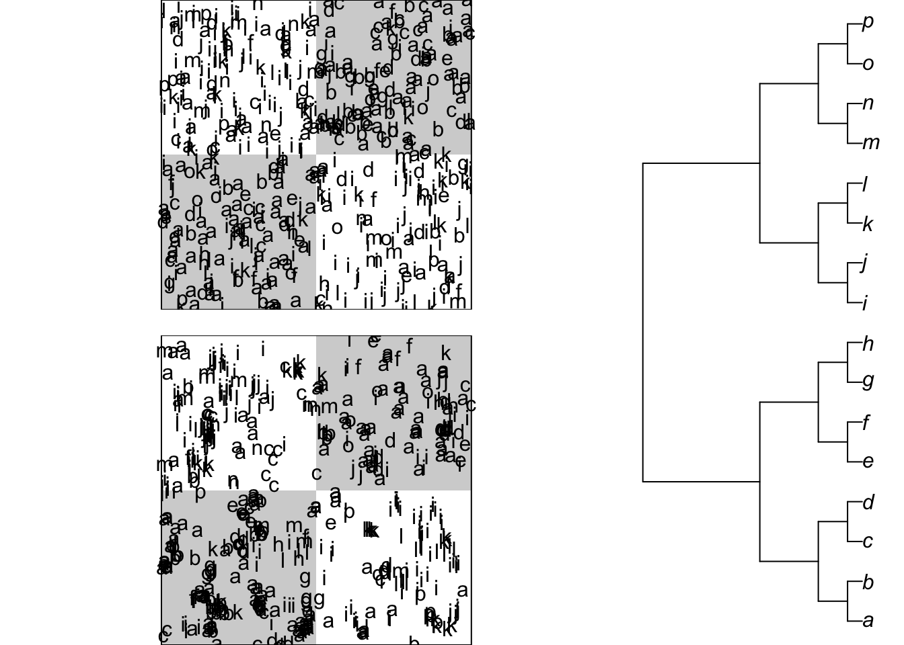
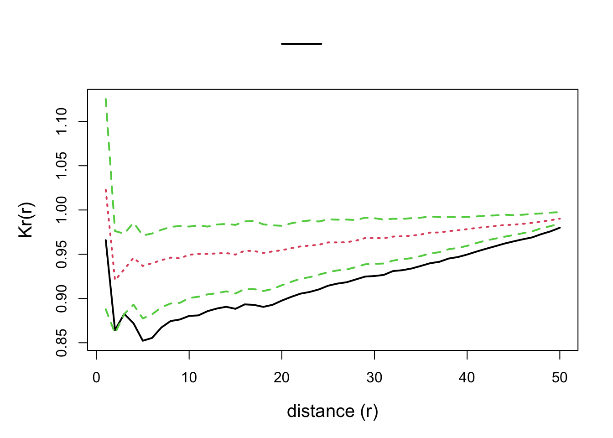
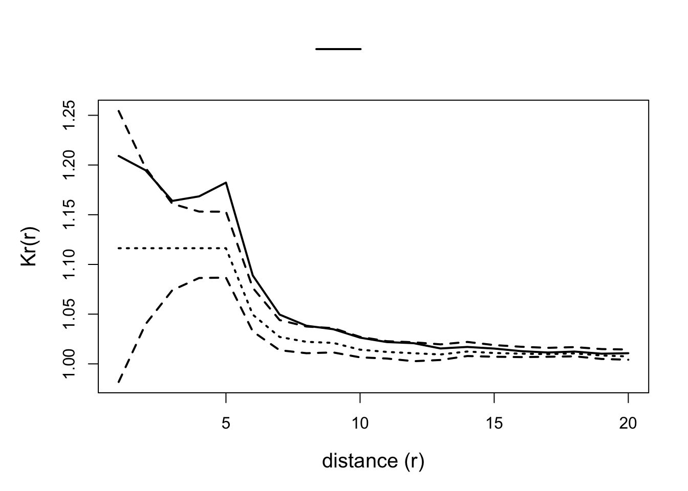
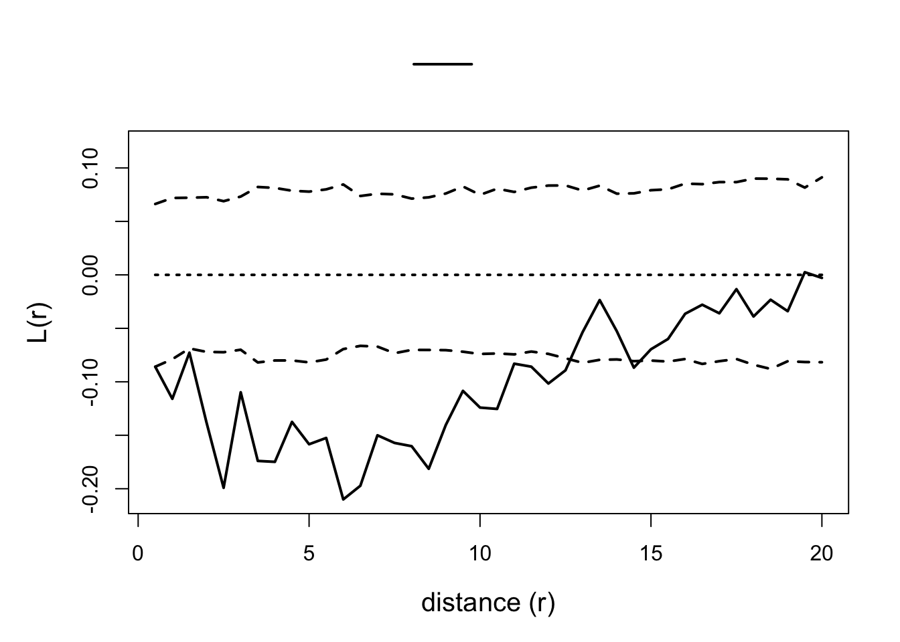

![]()

Unifying spatially-explicit Rao’s entropy, spatial concentration, and accumulation curves: the different aspects of local biodiversity
Abstract
To be written.
Keywords
Spatially-explicit diversity, Rao’s entropy, Simpson’s entropy, Species equivalence
1 Introduction
Local biotic and abiotic interactions are for long recognized as fundamental processes that shape the structure of ecological communities. In particular, the spatial pattern of plant communities may result from the combined effects of seed dispersal, inter-individual (i.e. intra- and inter-specific) competition/facilitation and habitat preferences (Dale 1999). While each single process may either promote or demote species coexistence, the diversity of interactions in space and/or time is a key feature for the maintenance of biological diversity (Clark et al. 2010; Cadotte et al. 2012). As a consequence, the ecological literature reveals increasing efforts in integrating approaches from phylogenetics, functional and community ecology (Mouquet et al. 2012), in order to account for the key components of species interactions with their biotic and abiotic environments. Towards this goal, a number of novel analytical methods incorporating measures of between-species phylogenetic relatedness or functional trait dissimilarities as a surrogate for ecological differences have been developed (Pavoine and Bonsall 2011). Among these methods some are specifically designed to explicitly account for space (e.g. Pavoine et al. 2011). However those studies generally consider spatially discontinuous community samples, i.e. the \(\beta\)-diversity component of Whittaker (1960), so that the underlying spatial framework can basically be related to the graph theory (Dale et al. 2002).
The interest of considering local diversity rather than at the scale of the whole community or sampling window has emerged in the literature since Batty (1974). A review can be found in Altieri et al. (2021), with diverse approaches. It is not discussed that the functioning of a community is influenced by its biodiversity, but it is straightforward to consider that each individual is concerned by the diversity of its neighbourhood rather that of the whole community (e.g., Hubbell et al. 2001 showed that tree mortality increased with neighbourhood species richness in a tropical evergreen forest). When mapped data are concerned, such as for instance those on tropical trees provided by large permanent forest plots (Losos and Leigh 2004), the well-developed framework of the spatial point pattern analysis (Ripley 1976, 1977) offers an efficient means of studying the continuous spatial variation in species diversity (Condit et al. 2000; Shimatani 2001a; Rajala and Illian 2012). A synthesis of the opportunities brought by this approach can be found in Wiegand et al. (2017).
Shen et al. (2013) and Pélissier and Goreaud (2015) concomitantly introduced within the framework of the spatial point pattern analysis a multitype correlation function that provides a distance-dependent measure of species diversity accounting for non-uniform species differences. If both contributions independently arrived to very similar functions, we believe that to help ecologists to well-understand and to take full advantage of novel approach, further clarifications are needed, especially regarding how it is related to well-known functions of spatial point pattern analysis, namely Ripley’s K-function (Ripley 1977) and its intertype extension, the K12-function (Lotwick and Silverman 1982) on the one hand, and Rao’s quadratic entropy on the other hand (Rao 1982).
The aim of this chapter is thus to introduce the rationale behind the functions of multivariate point pattern analysis that integrate between-species differences in a distance–dependent measure of diversity. It can basically be seen as an extension of the work of Shimatani (2001a) based on Simpson’s entropy to Rao’s entropy, one of the most powerful and flexible measure of species diversity (Pavoine 2012). It is also a particular implementation of the measurement of neighbourhood diversity which possesses some specific features due to the quadratic form of Rao’s entropy. The methods section hereafter makes the synthesis between these originally independent developments and outlines the central role of Rao’s entropy to reconcile them. We finally provide worked examples based on simulated data and on a real dataset from an experimental tropical forest plot in French Guiana.
2 Methods
2.1 From aspatial to spatial diversity
Simpson’s and Rao’s entropies
Simpson’s index of species diversity (Simpson 1949) gives the probability that a randomly selected pair of individuals in a sample is comprised of two different species. It is more than an index: it is a measure of entropy (Jost 2006) and thus should be named Simpson’s entropy. It is estimated with no bias by:
\[\hat{D} = 1 - \sum_{s =1}^S{\frac{n_s \left(n_s - 1 \right)}{n \left(n - 1 \right)}} \tag{1}\]
where \(n\) and \(S\) are the total numbers of individuals and species in the sample, respectively, and \(n_p\) the number of individuals of species \(s\).
Non-uniform divergences between species allow defining phylogenetic or functional diversity (Pielou 1975). Rao’s entropy is the expected divergence between individuals of a randomly selected pair in a sample (Rao 1982).
An unbiased estimator (Shimatani 2001b) is:
\[\hat{H}_D = \sum_{s =1}^S{\frac{n_s n_t}{n \left(n - 1 \right)}d_{p,q}}\]
where \(d_{p,q}\) is a measure of the pairwise divergence between species\(p\) and \(q\) (with \(d_{p,q}\) = \(d_{q,p}\) and \(d_{p,p} = 0\), but the triangular inequality \(d_{p,q} + d_{q,r} \geq d_{s,r}\) that defines a distance is not required). \(H_D\) is a measure of diversity commonly used in ecology, namely because it can be linked to ordination methods (Pavoine et al. 2004; Pavoine and Bonsall 2011).
Taking \(d_{p,q} = 1\) for all \(p \neq q\) and 0 otherwise, \(H_D\) reduces to Simpson’s \(D\) above.
Diversity is scale-dependent: its value increases with the sample size. It needs to be standardized. A common practise consists of estimating the asymptotic diversity, i.e. the diversity of an hypothetical community the available data is assumed to be a representative sample. The estimators above are doubly unbiased: in a finite sample, they estimate entropy taking into account sampling without replacement (Simpson 1949), and they estimate asymptotic diversity assuming sampling with replacement in a large community (Lande 1996).
Diversity accumulation curves
The Species Accumulation Curve (SAC) describes the expectation of the number of observed species with respect to the sample size (Gotelli and Colwell 2001), assuming uniform and independent sampling of individuals or, equivalently, that all species are distributed independently according to homogeneous Poisson point patterns. It can be derived from the distribution of species abundances of the full sample (Ugland et al. 2003). The sample size is a number of individuals that can be converted to a sample area assuming the density of individuals is constant.
SACs allow to define biodiversity at a given scale. It is an alternative to estimating asymptotic diversity, e.g. with the well-known Chao1 estimator (Chao 1984),
Diversity Accumulation Curves extend this approach to all measures of diversity. Simpson’s entropy accumulation curves were derived by Chao et al. (2014) and extended straightforwardly to Rao’s entropy applied to ultrametric distances (Marcon and Hérault 2015). Entropy is generally converted into Hill numbers (Jost 2006), but this is not necessary here.
Yet, DACs are aspatial (Rajala and Illian 2012), as they are designed to ignore the spatial pattern of the data. Spatial structure is generally considered as an empirical problem (Gotelli and Colwell 2001), difficultly solved by deriving accumulation curves taking into account the spatial pattern of each species (Picard et al. 2004).
Neighbourhood diversity
Taking into account biodiversity from the perspective of each individual, whose functioning is assumed to be related to it, requires estimating diversity in its neighbourhood, as argued by Rajala and Illian (2012).
Rather than aspatial diversity accumulation curves, neighbourhood diversity curves can be estimated empirically based on a fully-mapped dataset. The definition of neighbourhood is restricted here to a circle or radius \(r\) around each individual. Each of these circles can be considered as a local community whose entropy (e.g. Simpson’s or Rao’s entropy) can be estimated and averaged (Marcon et al. 2014) to obtain a value of \(\alpha\) entropy, that estimates the expected entropy in the neighbourhood of an individual. We’ll denote Simpson’s and Rao’s neighbourhood entropy \(D(r)\) and \(H_D(r)\) respectively.
Neighbourhood diversity can be computed with the package divent (Marcon and Puech 2026) for R (R Core Team 2026). The computation burden is heavy for community of a few thousand individuals because entropy must be estimated around each individual and for each neighbourhood size, with edge-effect corrections: the diversity partially observed in Neighbourhoods that do not fit in the sampling window must be extrapolated. An alternative approach, based on spatial statistics, allows the fast estimation of neighbourhood Simpson’s and Rao’s entropy, and reveals profound connections with the point-process theory.
2.2 Distance-dependent entropy based on the point-process theory
Ripley’s K
The framework of spatial point pattern analysis, as introduced by Ripley (1977), relies on the K-function, defined so that \(\lambda K(r)\) is the expected number of neighbours located within a distance \(r\) of an arbitrary point of the pattern with intensity \(\lambda\). Its classical unbiased estimator for a point pattern located within a finite sampling window is
\[\hat{K}(r) = \frac{1}{\hat{\lambda}n} \sum_{i=1}^{n}{\sum_{j=1}^{n}{ \mathbf{1}( \|x_i - x_j\| \leq r) c\left(i, j,,r\right) }} \tag{2}\]
where \(n\) is the number of points of the pattern, \(\hat{\lambda}\) is the pattern intensity generally estimated as \(n/A\), with \(A\) the sampling window area. The indicator function \(\mathbf{1}( \|x_i - x_j\| \leq r)\) equals 1 when points \(i\) and \(j\) are less than \(r\) apart, 0 else. \(c\left(i, j,,r\right)\) is correction of edge effects equal to 1 when the circle of radius \(r\) fits into the sampling window. When it does not, the isotropic correction proposed by Ripley (1977) applies to windows of any shape thanks to appropriate geometrical considerations (Goreaud and Pélissier 1999) to estimate the number of neighbors whith no bias.
A common extension of this univariate function is the intertype (or bivariate) K12-function proposed by Lotwick and Silverman (1982). Its estimator is:
\[\hat{K}_{12}(r) = \frac{1}{\hat{\lambda_2}n_1} \sum_{i=1}^{n_1}{\sum_{j=1}^{n_2}{ \mathbf{1}( \|x_i - x_j\| \leq r) c\left(i, j,,r\right) }} \tag{3}\]
\(K(r)\) is a multiscale function of second-order neighbourhood properties of a point pattern, which allows robust tests of statistical significance against the null hypothesis of a random distribution of the points within the sampling window. In contrast, \(K_{12}(r)\) allows characterizing the spatial interaction between the two types of points, which can be tested against various null hypotheses. The most interesting ones are the random labelling hypothesis, which means that, conditionally to the point locations, types 1 and 2 are randomly distributed among points of the pattern, and the population independence hypothesis, meaning that, conditionally to the species-specific spatial patterns, population of type 1 points is independent from population of type 2 points (Goreaud and Pélissier 2003).
A distance-dependent Simpson’s entropy
Shimatani (2001a) derived an estimator of the neighbourhood Simpson’s entropy, \(D(r)\), based on Ripley’s K-function:
\[\hat{D}(r) = 1 - \sum_{s =1}^S{\frac{\hat{\lambda}_s^2 \hat{K}_p(r)}{\hat{\lambda}^2 \hat{K}(r)}} \tag{4}\]
where \(\hat{K}(r)\) and \(\hat{K}_s(r)\) are Ripley’s K-functions for all points of the pattern (no distinction of species) and for points of species \(p\), respectively, with \(\hat{\lambda}\) and \(\hat{\lambda}_s\) the corresponding intensity estimators.
We can write a version standardized by \(\hat{D}\) as
\[\hat{K}_S(r) = \hat{D}(r) / \hat{D} \tag{5}\]
\(D(r)\) tends to \(D\) when \(r\) increases so \(K_S(r)\) tends to 1. It is noticeable that \(\hat{K}_S(r)\) has an expectation of 1 for all \(r\) under the random labelling hypothesis, i.e. a random distribution of the species names conditionally to the overall spatial pattern (Eckel et al. 2008).
Using the unbiased estimator of \(\hat{K}(r)\) introduced in Equation 2, allows correcting for edge effects for sampling windows of any shape.
We can notice for the following that \(\hat{K}_S(r)\) can also be estimated by considering the pairs of heterospecifics (Shimatani 2001a, eq. 9):
\[\hat{K}_S(r) = \left[ \sum_{s=1}^S{\sum_{t=1, s\ne t}^S{\frac{\hat{\lambda}_s \hat{\lambda}_t \hat{K}_{p,q}(r)}{\hat{\lambda}^2 \hat{K}(r)}}} \right] / \hat{D} \tag{6}\]
with \(\hat{K}_{p,q}(r)\) a generalization of \(K_{12}(r)\) estimator introduced earlier, to any couple of different species \(p\) and \(q\).
A generalization to Rao’s entropy
We therefore straightforwardly propose to generalize \(K_S(r)\) introduced above to a normalized, distance-dependent Rao’s quadratic entropy \(K_S(r)\) that integrates Ripley’s correction of edge effects estimated by:
\[\hat{K}_R(r) = \hat{H}_D(r) / \hat{H}_D = \left[ \sum_{s=1}^S{\sum_{t=1, s\ne t}^S{\frac{\hat{\lambda}_s \hat{\lambda}_t \hat{K}_{p,q}(r) d_{p,q}}{\hat{\lambda}^2 \hat{K}(r)}}} \right] / \hat{H}_D \tag{7}\]
This function has an expectation of 1 under the random labelling hypothesis and gives the mean proportion of Rao’s sample diversity (i.e., \(H_D\)) in a disc of radius r centered on an arbitrary point of the pattern. \(\hat{K}_R(r)\) reduces to \(\hat{K}_S(r)\) when \(d_{p,q} = 1\) for all species \(p \neq q\).
Multitype correlation and \(\beta\) diversity
Our KR- and KS-functions are cumulative functions as is the original K-function of Ripley (1977). This means that they are estimated for a series of concentric neighbourhood discs of increasing radii, for instance by a regular distance interval \(dr\). Some authors however prefer to refer to the framework of the pair-correlation function, \(g(r)\) (Stoyan et al. 1987; Wiegand and Moloney 2004), that is the derivative of \(K(r)\), giving the probably to encounter neighbouring points in concentric annuli between \(r\) and \(r - dr\) and relate it to \(\beta\) diversity.
Jérôme Chave and Leigh (2002) defined the \(F(r)\) function as the probability for two individuals located \(r\) apart to belong to the same species. Shen et al. (2013) named \(1 - F(r)\) the “spatially explicit Simpson’s index of diversity”, denoted \(\beta(r)\) by Shimatani (2001a), that is the probability for two individuals located \(r\) apart to belong different species. We will rather write \(\beta_S(r)\) for consistency with our notation system. It can be straightforwardly be generalized to \(\beta_R(r)\), the average divergence between to individuals taken at distance \(r\) (noted \(K_d(r)\) by Shen et al. 2013), thus a spatially explicit Rao’s index of diversity.
\[\hat{\beta}_R(r) = \sum_{s=1}^S{\sum_{t=1, s\ne t}^S{\frac{\hat{\lambda}_s \hat{\lambda}_t \hat{g}_{p,q}(r) d_{p,q}}{\hat{\lambda}^2 \hat{g}(r)}}} \tag{8}\]
These measures are actually differentiation \(\beta\) diversity measures sensu Jurasinski et al. (2009): they characterize how different spatial units \(r\) apart are. Yet, although both the numerator and the denominator of \(\hat{\beta}_R(r)\) are the derivatives of the numerator and the denominator of \(\hat{H}_D(r)\) but \(\hat{\beta}_R(r)\) is not the derivative of \(\hat{H}_D(r)\). Consequently the definition of \(\beta_R(r)\) (actually, that of \(1 - F(r)\)) does not comply with the orthodox framework of entropy partitioning (Jost 2007; Marcon et al. 2014). We argue in favour of the cumulative approach, i.e. that of \(\alpha\) diversity for this reason and also because the effect of neighbourhood diversity on the functioning of individuals is more naturally modelled as cumulative.
2.3 Testing ecological models
The \(K_R\)-function allows computing phylogenetic or functional entropy in the neighbourhood of individuals with respect to distance. Beyond measuring diversity, it also allows inferring ecological processes responsible of the observed patterns by testing them against appropriate null hypotheses.
The random labelling null hypothesis
The null hypothesis of random labelling originally proposed by Shimatani (2001a) provides a test of departure of \(\hat{K}_R(r)\) from a random distribution of the mark labels among points of the pattern. It allows testing for an absence of interaction between neighbouring points, conditionally to the overall pattern of point locations, so that the probability to find a pair of identical marks is independent of distance. When the function is above 1, the mean diversity within a disc of radius r from an arbitrary point of the pattern is higher than the total sample diversity, and conversely. Local confidence limits of the random labelling hypothesis at a given significance level can be built from Monte Carlo rank tests (Diggle 1979). But this hypothesis basically relies on the assumption that the marks result from a random process that affects individuals a posteriori with regards to the process of point location, so that we have for all \(p\) types of marks \(K_p(r) = K(r)\) (Goreaud and Pélissier 2003; Eckel et al. 2008) and hence \(K_R(r) = 1\). This could for instance corresponds to a multitype process resulting from a disease attack in a plant population that would mark the individuals as sick, non-infected or healthy carrier (see also Eckel et al. 2008 for an example in socio-economics). Sounded reasons for testing the random labelling hypothesis are however hardly conceivable in the context of species diversity, so testing this hypothesis only permits limited inferences about the processes at the origin of the observed pattern of species diversity.
The population independence null hypothesis
A more meaningful hypothesis for species diversity studies is the one of mutually independent populations, postulating that the spatial pattern of each type of mark (or population) is the realization of a specific spatial process (for instance of limited dispersion) and that the location of points of each population is independent from the location of the points of the other populations in the resulting multivariate pattern. This is a generalization of the population independence hypothesis proposed for testing the bivariate \(K_{12}\)-function by Lotwick and Silverman (1982) for which we expect that \(K_{p,q}(r) = \pi r^2\) for any marks \(p \neq q\) (Eckel et al. 2008), and hence, here also, \(K_R(r) = 1\). Note that this hypothesis differs from the random labelling hypothesis, except when all specific spatial patterns result from a stationary Poisson point process (Diggle 1983).
A classical method for testing the mutually independent population hypothesis is to build a Monte Carlo rank test keeping the pattern of each population unchanged, but randomizing their relative positions by a random shifting procedure of each pattern around a torus (Goreaud and Pélissier 2003). Such a procedure is cumbersome for highly multivariate patterns and is thus abandoned.
The species equivalence null hypothesis
More interestingly, \(K_R(r)\) provides opportunities for testing a highly relevant ecological hypothesis for diversity studies, based on \(d_{p,q}\), which quantifies how species differ one from each other. Shuffling between-species distances a large number of times means eliminating their differences and therefore testing a null hypothesis of species equivalence, put forward, for instance, in the neutral theory of biodiversity (Hubbell 2001). This null hypothesis can be tested conditionally to the pattern of point locations and to the spatial distribution of the species labels by permuting simultaneously the rows and columns in \(d_{p,q}\), which is equivalent, in the case of a cophenetic distance matrix, to permuting the tips of a hierarchical (taxonomic or phylogenetic) tree (Hardy 2008). It is noteworthy that under the null hypothesis of species equivalence, \(K_S(r)\) provides a theoretical expectation of \(K_R(r)\), i.e. the value expected when \(d_{p,q}\) is a uniform between-species distance matrix. When focusing on the species equivalence hypothesis, \(K_R(r) / K_S(r)\), the standardization proposed by Shen et al. (2013), provides a constant expectation of 1 at all distances. With reference to these authors and to the usual notation in point pattern analysis, this ratio is appropriately designated as \(K_d(r)\).
3 Application
3.1 Simulated data
We provide here a few examples to illustrate how the \(K_R\)-function behaves.
Habitat preference
In a first experiment (Figure 1), we simulated habitat preferences by generating heterogeneous spatial patterns in a checked 1-ha plot with two habitats: eight species were simulated with a twofold higher intensity in habitat 1, and 8 species with a twofold higher intensity in habitat 2, so that species abundant in one habitat were rare in the other one. We independently simulated the species-specific spatial patterns as heterogeneous Poisson or heterogeneous Neyman-Scott processes with a Cauchy dispersal kernel (Ghorbani 2013) mimicking limited dispersion. In the latter we fixed the scale parameter of the Cauchy kernel at 1, meaning that only 5% of offsprings were dispersed beyond above 20 m from their parents (Munoz et al. 2013). The 16 species-specific patterns were then assembled into multivariate spatial patterns. A hypothetical phylogeny mimicking trait clustering was simulated, where species close in the tree have same habitat preferences (Hardy and Senterre 2007). The cophenetic distances derived from the tree were normalized to 1.
Figure 2 and Figure 3 show that both these patterns exhibit a significant negative departure from the null hypothesis of species equivalence for the same range of \(r\) values that recovers the scale of the phylogenetic spatial structure representing the simulated pattern of habitat preferences.

Limited similarity
In a second experiment (Figure 4), we simulated a pattern of competitive interaction within a fixed range of 5 m around each individual, using a multi-Strauss process with, as between-species interaction matrix, the cophenetic distance derived from the clustered tree above. This means that the between-species competition intensity within a neighbouring disc of 5 m varies with their proximity within the phylogenetic tree: species that are close together in the tree compete more that species that are far in the tree, with no interaction between species that are not in the same half of the tree.
Figure 5 shows that \(K_R(r)\) departs significantly and positively from the null hypothesis of species equivalence for the same range of distances, confirming the limiting similarity pattern originally simulated. Restricted permutations within a cophenetic distance matrix, i.e. between species within clusters or clades in a hierarchical tree, can provide more specific tests of evolutionary hypotheses (Hardy 2008).
All the functions introduced above along with resources for computing tests of statistical significance based on Monte Carlo simulations have been implemented within the ads package (Pélissier and Goreaud 2015).

3.2 Paracou: a tropical forest plot in French Guiana
Study site and data
We used for application a dataset of tropical forest trees in Paracou experimental station, French Guiana (Gourlet-Fleury et al. 2004). Paracou was set up in 1984 to study the impact of silvicultural treatments on the forest dynamics based on control and logged-over plots. We used here data from a control plot (#6) of 250 x 250 m in which n_trees trees with minimum stem diameter at breast height (dbh) of 10 cm were mapped and identified to species level (335 different species). After several scientific programs developed in French Guiana, a database of functional traits is available for the sampled species. For the present application we selected the basic functional traits defining the Leaf-Height-Seed (LHS) scheme of plant strategies (Westoby 1998), i.e. the specific leaf area (SLA in cm2.g-1 of dry matter), the expected tree height at maturity (H in m) and, as a proxy for seed mass, a seed size ordered-codification (Seed), from 1 (very small seeds) to 5 (very big seeds). These traits are acknowledged to illustrate the major trade-offs in plant fitness between resource capture and allocation: SLA characterizes the importance of the growth response to favourable conditions, while H and Seed characterizes the importance of investment in the capacity to respond to disturbance. We also included the wood specific gravity (WSG in g.cm-3 of dry matter) as a fourth trait specifically accounting for additional important functions in trees, such as water transport, structural support, resource storage, defence, etc. (Jerôme Chave et al. 2009). We built from these data, two different between-species distance matrices, a phylogenetic one based on the APG III classification (Chase and Reveal 2009) and a functional one based on the four traits described above. The phylogenetic distance was simply computed from APG III hierarchical tree, considering \(d_{p,q} = 1\) if species \(p\) and \(q\) were from the same genus, \(d_{p,q} = 2\) if they were from different genera in the same family and \(d_{p,q} = 3\) if they were from different families. Such a cophenetic distance matrix has ultrametric properties ensuring desirable maximization properties to Rao quadratic entropy (Pavoine et al. 2005). To ensure the same ultrametric properties to the functional distance matrix, we computed the cophenetic distance for a hierarchical clustering with Ward method (i.e. minimizing total within-cluster variance) based on functional trait dissimilarities, taken as Gower distance, as recommended for mixed variables (Gower 1971). Both distance matrices were finally rescaled by their maximum in order to keep Rao’s entropy within the 0-1 standard range of values for diversity indices.
Analysis of species diversity spatial pattern

The L-function, i.e. the linearized univariate version of Ripley K-function, shows a significant departure towards regularity of the unmarked spatial pattern (i.e. regardless of species labels) up to 12 m Figure 6).
\(K_R(r)\) computed with both phylogenetic and functional between-species distance matrix shows a significant positive departure from the null hypothesis of species equivalence at short distances, indicating limiting similarity (Figure 7). Converging results were expected because the traits retained are generally considered as phylogenetically conserved (e.g. Baraloto et al. 2012)
As a short-range spatial regularity in tree stands is generally interpreted as resulting from self-thinning due to intense local competition (e.g. Kenkel 1988), it therefore seems that the sharing of resources between locally competing neighbours enhanced niche differentiation and thus species diversity.
4 Conclusion
The function of multitype point pattern analysis \(K_R(r)\) introduced here is a normalized version of Rao’s entropy measured in the neighborhood of individuals.
It relies on two well-known analytical frameworks: the spatial point pattern analysis popularized by Ripley (1977) through his K-function, and the quadratic entropy introduced by Rao (1982) as a diversity coefficient accounting for non-uniform between-species distances. It follows that a spatially continuous and unbiased measure of species diversity can be envisioned as a simple wrapper of classical functions of point pattern analysis, namely the K- and K12-functions. Introducing a non-uniform between-species distance matrix in the quantification of species diversity also provides opportunities to consider different and potentially complementary metrics, based on either taxonomic, phylogenetic or functional differences between species. This approach is allowed only by Rao’s entropy, thanks to its mathematical properties: the average distance between individuals relies on the number of pairs of heterospecific individuals, which is straightforwardly linked to the average number of heterospecific individuals summarized by the intertype \(K~12~\)-functions (Equation 7). Other measures of neighborhood diversity address more aspects of biodiversity but loose link with the point process theory.
Observed spatial diversity patterns can be tested against the highly meaningful ecological hypothesis of species equivalence emphasized by the neutral theory of biodiversity (Hubbell 2001) with the \(K_R(r)\) function. This new tool provides a powerful and robust tool to detect significant trait clustering or divergence expected to arise in ecological communities under the driving forces of habitat preferences or local competitive interactions.
References
Altieri, Linda, Daniela Cocchi, and Giulia Roli. 2021. ‘Spatial Entropy for Biodiversity and Environmental Data: The R-package SpatEntropy’. Environmental Modelling & Software 144 (October): 105149. https://doi.org/10.1016/j.envsoft.2021.105149.
Baraloto, Christopher, Olivier J. Hardy, C. E. Timothy Paine, et al. 2012. ‘Using Functional Traits and Phylogenetic Trees to Examine the Assembly of Tropical Tree Communities’. Journal of Ecology 100 (3): 690–701. https://doi.org/10.1111/j.1365-2745.2012.01966.x.
Batty, Michael. 1974. ‘Spatial Entropy’. Geographical Analysis 6 (1): 1–31. https://doi.org/10.1111/j.1538-4632.1974.tb01014.x.
Cadotte, Marc W., Russel Dinnage, and David Tilman. 2012. ‘Phylogenetic Diversity Promotes Ecosystem Stability’. Ecology 93 (8): S223–33. https://doi.org/10.1890/11-0426.1.
Chao, Anne. 1984. ‘Nonparametric Estimation of the Number of Classes in a Population’. Scandinavian Journal of Statistics 11 (4): 265–70. https://www.jstor.org/stable/4615964.
Chao, Anne, Nicholas J. Gotelli, T. C. Hsieh, et al. 2014. ‘Rarefaction and Extrapolation with Hill Numbers: A Framework for Sampling and Estimation in Species Diversity Studies’. Ecological Monographs 84 (1): 45–67. https://doi.org/10.1890/13-0133.1.
Chase, Mark W., and James L. Reveal. 2009. ‘A Phylogenetic Classification of the Land Plants to Accompany APG III’. Botanical Journal of the Linnean Society 161 (2): 122–27. https://doi.org/10.1111/j.1095-8339.2009.01002.x.
Chave, Jerôme, David Coomes, Steven Jansen, Simon L. Lewis, Nathan G. Swenson, and Amy E. Zanne. 2009. ‘Towards a Worldwide Wood Economics Spectrum’. Ecology Letters 12 (4): 351–66. https://doi.org/10.1111/j.1461-0248.2009.01285.x.
Chave, Jérôme, and Egbert G. Leigh. 2002. ‘A Spatially Explicit Neutral Model of \(\beta\)-Diversity in Tropical Forests’. Theoretical Population Biology 62 (2): 153–68. https://doi.org/10.1006/tpbi.2002.1597.
Clark, James S., David Bell, Chengjin Chu, et al. 2010. ‘High-Dimensional Coexistence Based on Individual Variation: A Synthesis of Evidence’. Ecological Monographs 80 (4): 569–608. https://doi.org/10.1890/09-1541.1.
Condit, Richard, Peter S. Ashton, Patrick Baker, et al. 2000. ‘Spatial Patterns in the Distribution of Tropical Tree Species’. Science 288 (5470): 1414–18. https://doi.org/10.1126/science.288.5470.1414.
Dale, Mark R. T. 1999. Spatial Pattern Analysis in Plant Ecology. Cambridge Studies in Ecology. Cambridge Univ. Press.
Dale, Mark R. T., Philip M. Dixon, Marie-Josée Fortin, Pierre Legendre, Donald E. Myers, and Michael S. Rosenberg. 2002. ‘Conceptual and Mathematical Relationships Among Methods for Spatial Analysis’. Ecography 25 (5): 558–77. https://doi.org/10.1034/j.1600-0587.2002.250506.x.
Diggle, Peter J. 1979. ‘On Parameter Estimation and Goodness-of-Fit Testing for Spatial Point Patterns’. Biometrics 35 (1): 87. https://doi.org/10.2307/2529938.
Diggle, Peter J. 1983. Statistical Analysis of Spatial Point Patterns. Academic Press.
Eckel, S., F. Fleischer, P. Grabarnik, and V. Schmidt. 2008. ‘An Investigation of the Spatial Correlations for Relative Purchasing Power in Baden-Wurttemberg’. Asta-Advances in Statistical Analysis 92 (2): 135–52. https://doi.org/10.1007/s10182-008-0066-1.
Ghorbani, Mohammad. 2013. ‘Cauchy Cluster Process’. Metrika 76 (5): 697–706. https://doi.org/10.1007/s00184-012-0411-y.
Goreaud, François, and Raphaël Pélissier. 1999. ‘On Explicit Formulas of Edge-Effect Correction for Ripley’s K-function’. Journal of Vegetation Science 10 (3): 433–38.
Goreaud, François, and Raphaël Pélissier. 2003. ‘Avoiding Misinterpretation of Biotic Interactions with the Intertype K12 Function: Population Independence Vs Random Labelling Hypotheses’. Journal of Vegetation Science 14 (5): 681–92. https://doi.org/10.1111/j.1654-1103.2003.tb02200.x.
Gotelli, Nicholas J., and Robert K. Colwell. 2001. ‘Quantifying Biodiversity: Procedures and Pitfalls in the Measurement and Comparison of Species Richness’. Ecology Letters 4 (4): 379–91. https://doi.org/10.1046/j.1461-0248.2001.00230.x.
Gourlet-Fleury, Sylvie, Jean Marc Guehl, and Olivier Laroussinie. 2004. Ecology & Management of a Neotropical Rainforest. Lessons Drawn from Paracou, a Long-Term Experimental Research Site in French Guiana. Elsevier.
Gower, J. C. 1971. ‘A General Coefficient of Similarity and Some of Its Properties’. Biometrics 27 (4): 857–71. https://doi.org/10.2307/2528823.
Hardy, Olivier J. 2008. ‘Testing the Spatial Phylogenetic Structure of Local Communities: Statistical Performances of Different Null Models and Test Statistics on a Locally Neutral Community’. Journal of Ecology 96 (5): 914–26. https://doi.org/10.1111/j.1365-2745.2008.01421.x.
Hardy, Olivier J., and Bruno Senterre. 2007. ‘Characterizing the Phylogenetic Structure of Communities by an Additive Partitioning of Phylogenetic Diversity’. Journal of Ecology 95 (3): 493–506. https://doi.org/10.1111/j.1365-2745.2007.01222.x.
Hubbell, Stephen P. 2001. The Unified Neutral Theory of Biodiversity and Biogeography. Princeton University Press.
Hubbell, Stephen P., Jorge A. Ahumada, Richard Condit, and Robin B. Foster. 2001. ‘Local Neighborhood Effects on Long-Term Survival of Individual Trees in a Neotropical Forest’. Ecological Research 16: 859–75. https://doi.org/10.1046/j.1440-1703.2001.00445.x.
Jost, Lou. 2006. ‘Entropy and Diversity’. Oikos 113 (2): 363–75. https://doi.org/10.1111/j.2006.0030-1299.14714.x.
Jost, Lou. 2007. ‘Partitioning Diversity into Independent Alpha and Beta Components’. Ecology 88 (10): 2427–39. https://doi.org/10.1890/06-1736.1.
Jurasinski, Gerald, Vroni Retzer, and Carl Beierkuhnlein. 2009. ‘Inventory, Differentiation, and Proportional Diversity: A Consistent Terminology for Quantifying Species Diversity’. Oecologia 159 (1): 15–26. https://doi.org/10.1007/s00442-008-1190-z.
Kenkel, N. C. 1988. ‘Pattern of Self-Thinning in Jack Pine: Testing the Random Mortality Hypothesis’. Ecology 69 (4): 1017–24. https://doi.org/10.2307/1941257.
Lande, Russell. 1996. ‘Statistics and Partitioning of Species Diversity, and Similarity Among Multiple Communities’. Oikos 76 (1): 5–13. https://doi.org/10.2307/3545743.
Losos, Elizabeth C., and Egbert Giles Leigh. 2004. Tropical Forest Diversity and Dynamism: Findings from a Large-Scale Plot Network. University of Chicago press.
Lotwick, H. W., and B. W. Silverman. 1982. ‘Methods for Analysing Spatial Processes of Several Types of Points’. Journal of the Royal Statistical Society: Series B (Statistical Methodology) 44 (3): 406–13. https://www.jstor.org/stable/2345499.
Marcon, Eric, and Bruno Hérault. 2015. ‘Decomposing Phylodiversity’. Methods in Ecology and Evolution 6 (3): 333–39. https://doi.org/10.1111/2041-210X.12323.
Marcon, Eric, and Florence Puech. 2026. Divent: Entropy Partitioning to Measure Diversity. Manual. https://doi.org/10.32614/CRAN.package.divent.
Marcon, Eric, Ivan Scotti, Bruno Hérault, Vivien Rossi, and Gabriel Lang. 2014. ‘Generalization of the Partitioning of Shannon Diversity’. Plos One 9 (3): e90289. https://doi.org/10.1371/journal.pone.0090289.
Mouquet, Nicolas, Vincent Devictor, Christine N. Meynard, et al. 2012. ‘Ecophylogenetics: Advances and Perspectives’. Biological Reviews 87 (4): 769–85. https://doi.org/10.1111/j.1469-185X.2012.00224.x.
Munoz, François, Champak R. Beeravolu, Raphaël Pélissier, and Pierre Couteron. 2013. ‘Do Spatially-Implicit Estimates of Neutral Migration Comply with Seed Dispersal Data in Tropical Forests?’ Plos One 8 (8). https://doi.org/10.1371/journal.pone.0072497.
Pavoine, Sandrine. 2012. ‘Clarifying and Developing Analyses of Biodiversity: Towards a Generalisation of Current Approaches’. Methods in Ecology and Evolution 3 (3): 509–18. https://doi.org/10.1111/j.2041-210X.2011.00181.x.
Pavoine, Sandrine, and Michael B. Bonsall. 2011. ‘Measuring Biodiversity to Explain Community Assembly: A Unified Approach’. Biological Reviews 86 (4): 792–812. https://doi.org/10.1111/j.1469-185X.2010.00171.x.
Pavoine, Sandrine, Anne-Béatrice Dufour, and Daniel Chessel. 2004. ‘From Dissimilarities Among Species to Dissimilarities Among Communities: A Double Principal Coordinate Analysis’. Journal of Theoretical Biology 228 (4): 523–37. https://doi.org/10.1016/j.jtbi.2004.02.014.
Pavoine, Sandrine, Sébastien Ollier, and D. Pontier. 2005. ‘Measuring Diversity from Dissimilarities with Rao’s Quadratic Entropy: Are Any Dissimilarities Suitable?’ Theoretical Population Biology 67 (4): 231–39. https://doi.org/10.1016/j.tpb.2005.01.004.
Pavoine, Sandrine, Errol Vela, Sophie Gachet, Gérard de Belair, and Michael B. Bonsall. 2011. ‘Linking Patterns in Phylogeny, Traits, Abiotic Variables and Space: A Novel Approach to Linking Environmental Filtering and Plant Community Assembly’. Journal of Ecology 99 (1): 165–75. https://doi.org/10.1111/j.1365-2745.2010.01743.x.
Pélissier, Raphaël, and François Goreaud. 2015. ‘Ads Package for R: A Fast Unbiased Implementation of the K -Function Family for Studying Spatial Point Patterns in Irregular-Shaped Sampling Windows’. Journal of Statistical Software 63 (6). https://doi.org/10.18637/jss.v063.i06.
Picard, Nicolas, M. Karembe, and Philippe Birnbaum. 2004. ‘Species-Area Curve and Spatial Pattern’. Ecoscience 11 (1): 45–54. https://doi.org/10.1080/11956860.2004.11682808.
Pielou, Evelyn C. 1975. Ecological Diversity. Wiley.
R Core Team. 2026. R: A Language and Environment for Statistical Computing. R Foundation for Statistical Computing.
Rajala, T., and J. Illian. 2012. ‘A Family of Spatial Biodiversity Measures Based on Graphs’. Environmental and Ecological Statistics 19 (4): 545–72. https://doi.org/10.1007/s10651-012-0200-9.
Rao, C. Radhakrishna. 1982. ‘Diversity and Dissimilarity Coefficients: A Unified Approach’. Theoretical Population Biology 21: 24–43. https://doi.org/10.1016/0040-5809(82)90004-1.
Ripley, Brian D. 1976. ‘The Second-Order Analysis of Stationary Point Processes’. Journal of Applied Probability 13 (2): 255–66. https://doi.org/10.2307/3212829.
Ripley, Brian D. 1977. ‘Modelling Spatial Patterns’. Journal of the Royal Statistical Society: Series B (Statistical Methodology) 39 (2): 172–212. https://doi.org/10.1111/j.2517-6161.1977.tb01615.x.
Shen, Guochun, Thorsten Wiegand, Xiangcheng Mi, and Fangliang He. 2013. ‘Quantifying Spatial Phylogenetic Structures of Fully Stem-Mapped Plant Communities’. Methods in Ecology and Evolution 4 (12): 1132–41. https://doi.org/10.1111/2041-210X.12119.
Shimatani, Kenichiro. 2001a. ‘Multivariate Point Processes and Spatial Variation of Species Diversity’. Forest Ecology and Management 142 (1-3): 215–29. https://doi.org/10.1016/s0378-1127(00)00352-2.
Shimatani, Kenichiro. 2001b. ‘On the Measurement of Species Diversity Incorporating Species Differences’. Oikos 93 (1): 135–47. https://doi.org/10.1034/j.1600-0706.2001.930115.x.
Simpson, E. H. 1949. ‘Measurement of Diversity’. Nature 163 (4148): 688. https://doi.org/10.1038/163688a0.
Stoyan, Dietrich, W. S. Kendall, and Joseph Mecke. 1987. ‘Stochastic Geometry and Its Applications’. In Wiley Series in Probability and Mathematical Statistics. John Wiley & Sons.
Ugland, Karl I., John S. Gray, and Kari E. Ellingsen. 2003. ‘The Species-Accumulation Curve and Estimation of Species Richness’. Journal of Animal Ecology 72 (5): 888–97. https://doi.org/10.1046/j.1365-2656.2003.00748.x.
Westoby, Mark. 1998. ‘A Leaf-Height-Seed (LHS) Plant Ecology Strategy Scheme’. Plant and Soil 199: 213–27. https://doi.org/10.1023/A:1004327224729.
Whittaker, R. H. 1960. ‘Vegetation of the Siskiyou Mountains, Oregon and California’. Ecological Monographs 30 (3): 279–338. https://doi.org/10.2307/1943563.
Wiegand, Thorsten, and Kirk A. Moloney. 2004. ‘Rings, Circles, and Null-Models for Point Pattern Analysis in Ecology’. Oikos 104 (2): 209–29. https://doi.org/10.1111/j.0030-1299.2004.12497.x.
Wiegand, Thorsten, María Uriarte, Nathan J. B. Kraft, Guochun Shen, Xugao Wang, and Fangliang He. 2017. ‘Spatially Explicit Metrics of Species Diversity, Functional Diversity, and Phylogenetic Diversity: Insights into Plant Community Assembly Processes’. Annual Review of Ecology, Evolution, and Systematics 48 (1): 329–51. https://doi.org/10.1146/annurev-ecolsys-110316-022936.